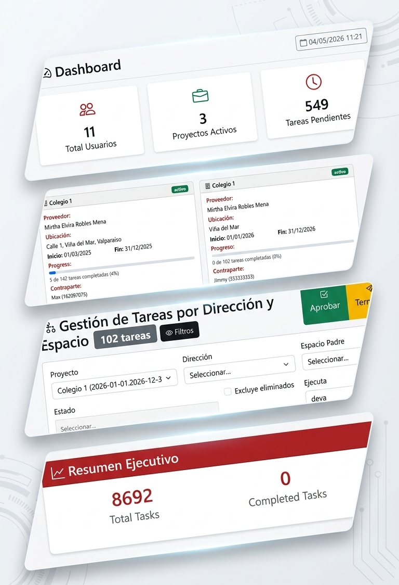
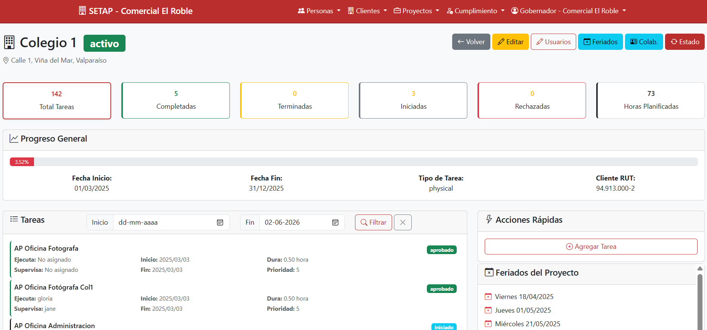
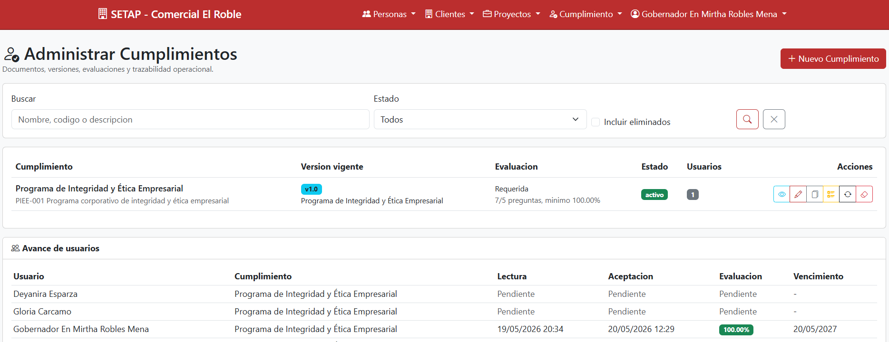

Planifica procesos, coordina equipos, supervisa la ejecución y demuestra cumplimiento verificable desde una sola plataforma
Actividades recurrentes que deben programarse manualmente una y otra vez, consumiendo tiempo y aumentando el riesgo de errores.
Los responsables no siempre tienen visibilidad inmediata del avance real de las tareas ni de las evidencias asociadas.
Es difícil identificar qué equipos tienen capacidad disponible y cuáles están sobreasignados.
Proyectos, tareas, evidencias y cumplimiento terminan distribuidos entre planillas, correos y conversaciones.
SETAP permite transformar procesos operacionales recurrentes en tareas ejecutables, supervisables y medibles. Centraliza proyectos, procesos, tareas, evidencias, capacidad operativa y cumplimiento normativo para entregar trazabilidad completa de la ejecución.

Configura clientes, responsables y equipos de trabajo.
Define actividades recurrentes mediante modelos reutilizables.
Programa tareas individuales o masivas para períodos completos.
Los ejecutores inician, desarrollan y completan tareas.
Incorpora observaciones y fotografías asociadas a la ejecución.
Los supervisores aprueban o rechazan las tareas ejecutadas.
Visualiza indicadores, avance y capacidad operativa.
Visualiza el avance de proyectos, el estado de las tareas,
la carga operativa de los equipos, la actividad de los usuarios
y el cumplimiento normativo mediante dashboards y reportes consolidados.
Los tableros permiten analizar tareas activas, iniciadas, terminadas,
aprobadas o rechazadas, facilitando la supervisión diaria de la operación.

Estado global de contratos , Avance de proyectos , Cumplimiento normativo , Capacidad operativa , Indicadores ejecutivos
Tareas pendientes , Tareas terminadas , Aprobaciones , Rechazos , Evidencias registradas
Tareas asignadas , Tareas disponibles , Registro de observaciones , Evidencias fotográficas , Historial de ejecución
Avance de proyectos , Reportes de ejecución , Evidencias aprobadas , Cumplimiento contractual , Acceso de solo lectura
Control de tareas periódicas, evidencias de ejecución y seguimiento operacional.
Administración de actividades por instalación, sector o área física.
Planificación de actividades recurrentes y control de cumplimiento.
Gestión centralizada de proyectos, equipos y reportabilidad diferenciada por cliente.
SETAP permite gestionar programas de cumplimiento mediante documentos versionados,
lectura obligatoria, firma electrónica mediante contraseña, evaluaciones
y trazabilidad histórica de resultados.
Cada nueva versión de un documento puede requerir una nueva lectura y aprobación,
manteniendo evidencia verificable del cumplimiento de cada usuario.
